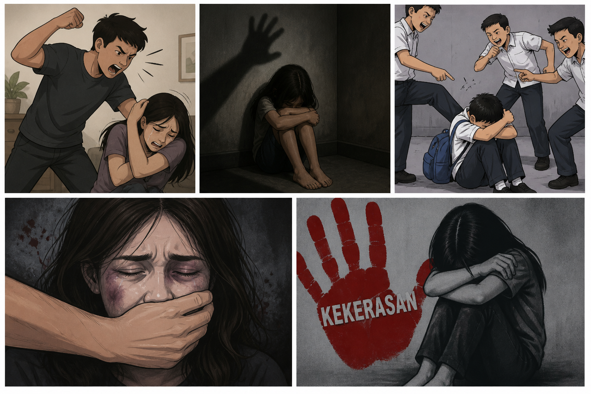

Butuh bantuan? Laporkan melalui Telepon, WhatsApp, atau formulir online. Kami akan menindak lanjuti setiap laporan Anda.
Kenali bentuk kekerasan, laporkan jika Anda atau orang terdekat mengalaminya
Memberikan respons cepat terhadap setiap laporan yang masuk dengan penanganan yang tepat, terarah, dan profesional demi membantu korban serta menciptakan lingkungan yang lebih aman.
Memberikan pendampingan menyeluruh bagi korban melalui dukungan psikologis, bantuan visum, serta pendampingan dalam proses pelaporan dan penanganan bersama pihak kepolisian.
Menjamin keamanan dan kerahasiaan pelapor dengan memberikan perlindungan dari ancaman, intimidasi, maupun tindakan lanjutan yang dapat membahayakan korban atau masyarakat sekitar.
Memberikan dukungan dan pendampingan dalam proses hukum sesuai peraturan perundang-undangan yang berlaku guna memastikan hak dan perlindungan korban terpenuhi secara adil.
Dengan menyebarkan informasi dan menggunakan layanan pengaduan ini, Anda turut membantu menciptakan lingkungan yang lebih aman serta melindungi perempuan, anak-anak, dan masyarakat dari berbagai bentuk kekerasan dan tindakan berbahaya.